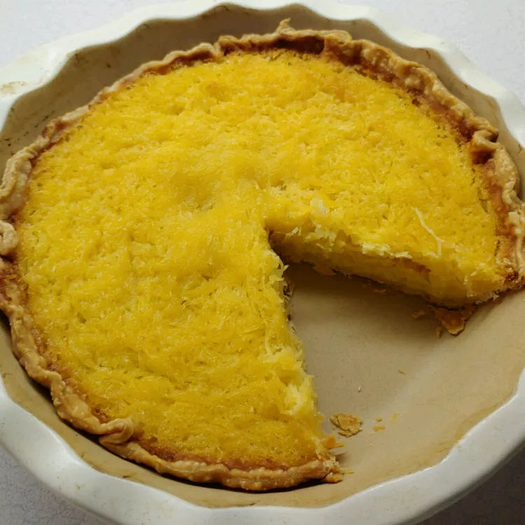

Home
Pie

Description
Not too many people would know this spaghetti squash pie is not actually
made with coconut. I wasn't sure what to do with a bumper crop of
spaghetti squash, and this quickly became an annual answer to a now
non-issue!
Add an Ingredient
- 1 cup white sugar
- 3 large eggs
- ¼ cup butter, melted
Steps
- Preheat the oven to 350 degrees F (175 degrees C).
-
Beat sugar and eggs together in a large bowl until light and frothy.
Beat in melted butter, lemon juice, and vanilla until well blended. Stir
in spaghetti squash.
-
Pour mixture into baked pie shell. Dust the top with nutmeg and
cinnamon.